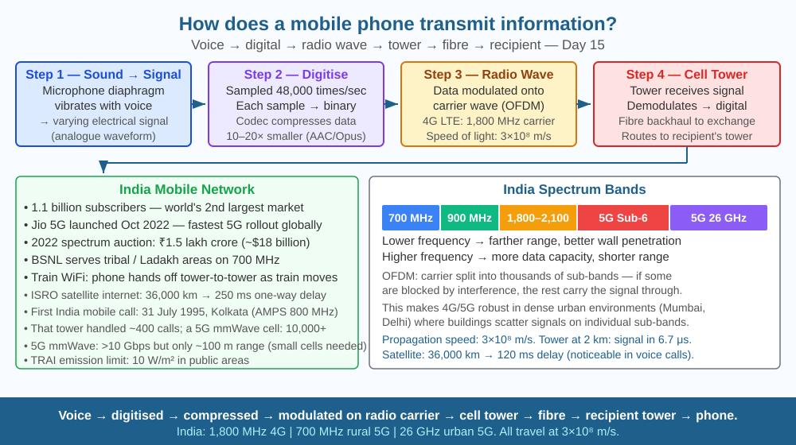

Discover how your voice and data are converted into electromagnetic waves and sent across hundreds of kilometres — and understand the physics behind the world's largest wireless network.
India has over 1.1 billion mobile phone subscribers — the world's second-largest mobile market. When you make a call, your voice travels hundreds of kilometres in under a second. It passes through the air, through towers, through undersea cables, and through satellites — yet arrives perfectly reconstructed at the other end. There are no wires between you and your friend. How does a device the size of your palm encode the sound of your voice into invisible waves and send it across a city in milliseconds?
Step 1 — Converting sound to electrical signal:
The phone's microphone contains a diaphragm that vibrates with sound waves. These vibrations create a varying electrical signal (analogue) that mirrors the sound wave's pattern of compressions and rarefactions.
Step 2 — Digitisation (ADC):
The analogue signal is sampled thousands of times per second (4G samples at 48,000 times/second). Each sample is assigned a binary number (0s and 1s). This converts continuous sound into discrete digital data.
Step 3 — Compression:
Digital audio codecs (like AAC or Opus) compress the data by removing sounds humans cannot perceive — reducing the data by 10–20×.
Step 4 — Encoding into radio waves:
The phone's transmitter varies the properties of a carrier radio wave to encode the digital data: - Frequency Modulation (FM): vary frequency to encode signal - Amplitude Modulation (AM): vary amplitude - Modern phones use OFDM (Orthogonal Frequency Division Multiplexing) — thousands of narrow sub-carrier frequencies simultaneously, making 4G/5G robust to interference.
The carrier frequency for 4G LTE in India is typically 1,800 MHz or 2,100 MHz — frequencies allocated by TRAI (Telecom Regulatory Authority of India).
Step 5 — Transmission:
The encoded radio signal is transmitted as an electromagnetic wave (EM wave) from the phone's antenna. EM waves travel at the speed of light (3 × 10⁸ m/s) through air and space.
Step 6 — Cell tower reception and routing:
The signal reaches the nearest cell tower (BTS — Base Transceiver Station). The tower demodulates the signal and sends it as digital data through a fibre optic backhaul cable to a mobile switching centre, which routes the call to the recipient's network.
Step 7 — Reception:
The recipient's tower sends radio waves to the recipient's phone. The phone demodulates, decodes, decompresses, converts back to analogue, drives the speaker. The reverse of the sending process.
Think of radio communication like sending a message in Morse code by flashing a torch. Your voice (the message) is the pattern of dots and dashes. The torch beam (carrier wave) is the radio wave. You modulate (change) the pattern of the beam to encode your message. The receiver interprets the pattern of flashes back into words. A mobile phone does this 48,000 times per second, using 1,800 MHz oscillations instead of a visible torch, and uses 1,000+ narrow frequency bands simultaneously (OFDM) so that interference on one band does not lose the whole message.

The diagram shows the 7-step transmission chain: (1) Person speaking into phone → sound wave shown. (2) Microphone converting to electrical signal — waveform. (3) ADC sampling → binary numbers. (4) Radio wave modulation — carrier wave with encoded data. (5) Phone antenna radiating EM waves. (6) Cell tower receiving, converting to fibre optic → routing centre. (7) Recipient tower radiating → recipient phone → speaker → person hearing. Below: a frequency spectrum shows 2G/3G/4G/5G bands from 700 MHz to 26 GHz, colour-coded.
Open your phone's Settings → Network → Signal strength (or use a signal meter app). Walk around the room or building and note how signal strength (in dBm — negative numbers, closer to 0 = stronger) changes. Note: signal is stronger near windows and weaker inside concrete rooms (concrete blocks radio waves). Go to the top floor vs the bottom — observe the difference. You are directly observing how obstacles absorb and scatter radio waves — the same phenomenon network engineers model when planning cell tower placement.
5G uses millimetre-wave frequencies (24–100 GHz) for extremely high speeds (>10 Gbps). But these short waves cannot penetrate walls or travel far — a 5G mmWave cell only covers ~100 metres. This means 5G requires "small cells" — thousands of tiny antennas on lamp-posts and buildings, rather than a few tall towers. This creates a dilemma: more antennas → more coverage, but also more infrastructure, cost, and public concern about electromagnetic exposure. India's TRAI regulates emission limits (10 W/m² for public areas). How does the physics of wave penetration constrain the design of future wireless networks?
How does a mobile phone send information wirelessly?
Why is understanding radio wave transmission more useful than knowing phones communicate?
If you moved to an area with no cell towers nearby, what would you predict?
(a) A radio wave travels at 3 × 10⁸ m/s. How long does it take to travel from your phone to a cell tower 2 km away? (b) From that tower, the signal travels through fibre optic cable at 2 × 10⁸ m/s to a routing centre 50 km away. How long does this take? (c) A satellite internet connection sends the signal 36,000 km to a geostationary satellite at the speed of light. What is the one-way delay? Why is this a problem for real-time voice calls? (d) 4G LTE uses a 20 MHz-wide channel and achieves ~75 Mbps download speed. At this rate, how long does it take to download a 600 MB Bollywood film?
The first mobile phone call in India was made on 31 July 1995, from the West Bengal Chief Minister to the Union Communications Minister using Modi Tel's network in Kolkata. The phone used was a Motorola analogue handset and the call used the AMPS (Advanced Mobile Phone Service) standard — the same technology as the first US mobile phones. That network operated at 800 MHz and could handle ~400 calls per cell tower. A modern 5G cell in Mumbai using 100 MHz of mmWave spectrum can handle 10,000+ simultaneous users — a 25× improvement in just under 30 years.
Voice → electrical signal → digitised → compressed → modulated onto radio carrier wave → transmitted at speed of light → received by tower → routed via fibre → recipient's phone reverses the process. India uses 700 MHz to 26 GHz spectrum.